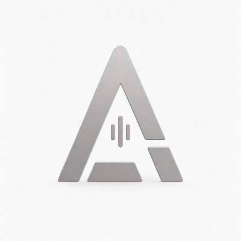

Sift
Find, understand, and organize your files with private local AI
Hi, I’m Richard

Co-founderAIDDA Institute Developer ambassadorQwen
Developer ambassadorQwen
I work on adaptive intelligence for decision making, optimization & discovery, and I enjoy building open-source projects
Install and run Sift in a few commands
curl -fsSL https://ollama.com/install.sh | sh
open -a Ollama
git clone https://github.com/richardcsuwandi/sift.git
cd sift && uv tool install .
sift ~/DownloadsPrefer a GUI? Sift also ships as a native macOS app